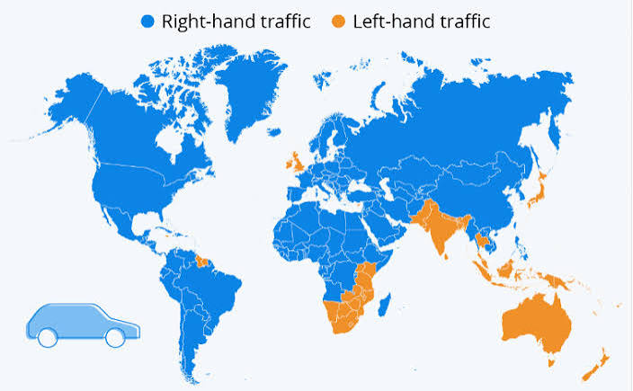

Driving Side
Many people around the world use cars to drive. However, there is not one universal driving side for every country. Some countries like the United States drive on the right side of the road, while others, like the United Kingdom, drive on the left. Knowing what continent you are on and then looking at the side cars are driving on can immediately eliminate many possibilities.
Map of Driving Sides
This image shows which countries around the world drive on the left side and which drive on the right side.

Notice how in Europe, the UK and Ireland are the only countries that drive on the left. This means seeing a European license plate and seeing cars driving on the left side of the road can immediately narrow down your location to these two countries. It's also worth noting that only the Southern and some Eastern countries in Africa drive on the left. This means you can focus your search when you find out the driving side in Africa.
Can't Find Any Cars
Sometimes, you will find yourself in a place where there are not any cars around. Somethings you can do when this happens it to look at road signs. The sign will often be facing the way drivers are coming on that side of the road. Even if you can't find any signs, there is one more meta strategy you can use. In most street view images, there is always one car visible. That car is the one that took the street view image. Often times you can get the driving side by looking down at the car and seeing which way it faces. Unfortunately, sometimes you will get a tripod or hiker view instead of a car. In this case, you can't decide the driving side from the car itself.